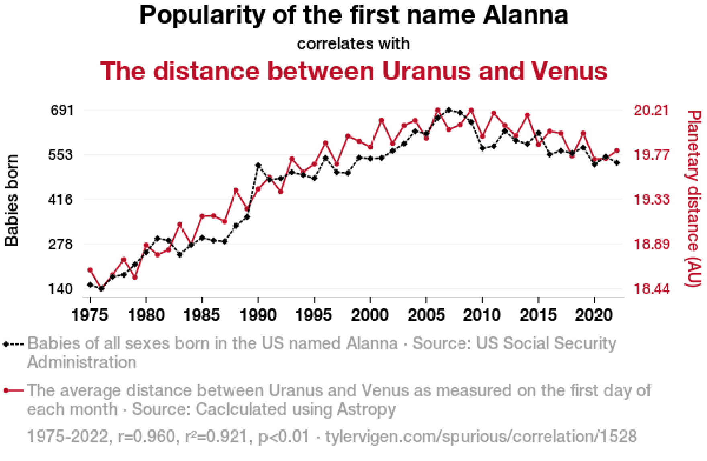
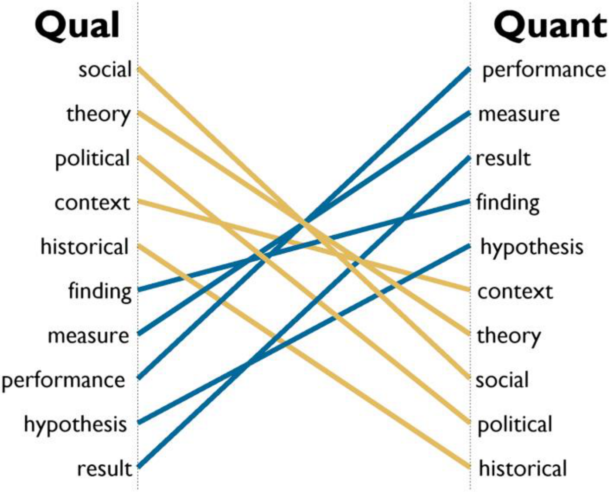
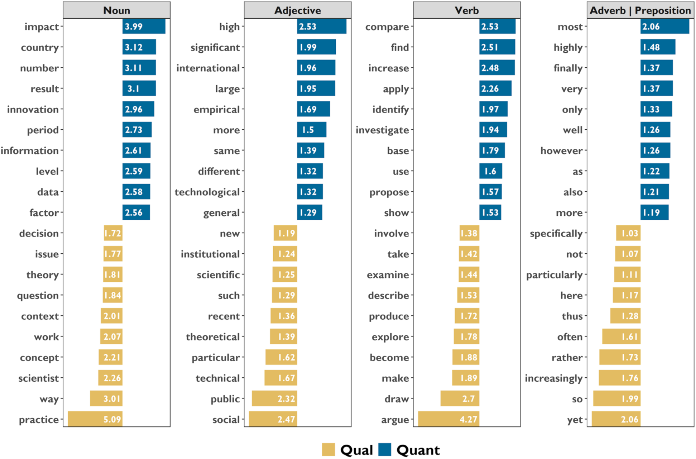

Annual US household spending on laundry and cleaning supplies, and Google searches for flights to Antarctica. tylervigen.com/spurious-correlations
Dr GPT explains it
As US households spent more on laundry and cleaning supplies, they became obsessed with achieving the freshest, cleanest scent possible. This obsession extended to wanting the ultimate fresh air experience, leading people to search for flights to Antarctica, known for its crisp, pure air. After all, if your laundry smells like a refreshing polar breeze, why not experience the real deal, right? Maybe it's time for a new marketing slogan: Antarctica: Because Freshness Matters!Dr GPT
Two more lines that move together

Popularity of the first name Alanna, and the distance between Uranus and Venus. tylervigen.com/spurious-correlations
Dr GPT explains it again
As more and more babies were named Alanna, the collective sound frequency of their parents proudly calling out to them created small but measurable sonic waves. Over time, these waves interfered with the gravitational pull between Uranus and Venus, inadvertently nudging them slightly further apart. The Alanna Effect, as it was dubbed by baffled astronomers, led to re-evaluations of celestial mechanics and left everyone marvelling at the cosmic consequences of baby name trends.Dr GPT
Correlation is not causation
Correlation is not causation.
Never forget this when writing your dissertation.
Two series with nothing in common
Each click draws two fresh random walks, generated without reference to each other, and reports the correlation between them.
Two series that each drift over time will often correlate strongly for no reason. The trends supply the correlation; nothing supplies the cause.
The ladder of causation
Ladder of Causation. Source: Pearl and Mackenzie, 2018.
Click a rung. One example runs through the three: trees on a street and the price of the houses on that street.
Too important to abandon
Identifying causal mechanisms is a fundamental goal of social science.
Often rely upon untestable assumptions (e.g., all else equal).
Often inappropriate even under those assumptions (e.g., ethics).
Too important to abandon.
Being explicit about the causal objective
Reduces ambiguity in the research question.
Reduces errors in the data analysis.
Reduces excesses in the results interpretation.
But be prepared to get lots of:
Dear author: Your observational study cannot prove causation. Please replace all references to causal effects by references to associations.
A dissertation finds that neighbourhoods with more green space have higher house prices. Which sentence states the causal objective explicitly?
Quant vs Qual
A strong divide between quant and qual scholars
"Qual studies generate and value new theory."
"Quant approaches confirm existing theory and evaluate the performance of scientific institutions."
Generalisation vs uniqueness.
Explanation vs description.
Positivist vs postmodern epistemology.
Diverging evaluative dimensions

Diverging evaluative ("good-bad") dimensions. Source: Kang and Evans, 2020.
Which words appear in titles and abstracts

Probability of key word in title and abstract. Source: Kang and Evans, 2020.
For each word, guess which side uses the word more.
0 of 12 answered
The same underlying motivation
Same underlying motivation, to seek
Intellectual security in the form of clarity, precision, 'objectivity,' 'truth,' it will become clear that there is one principle … anything goesPaul Feyerabend, Against Method
Next
Statistics
The next page covers the statistics slides: population and sample, sampling strategies, descriptive and inferential statistics, and the three results to carry around.